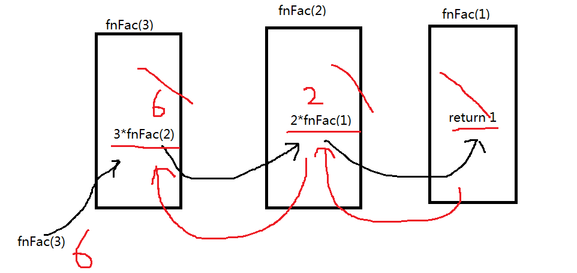

梳理知识点
循环结构 ：
while
while(){
}
do....while
do{
}while()
for(表达式1;表达式2;表达式3){
}
break和continue
for in
2、函数
函数 ： 函数就是一个工具 完成某个功能的一小段代码块
系统函数 ： parseInt() alert() prompt() .... 【注】：小驼峰，系统函数
自定义函数 ：
function 函数名(){ 函数的调用可以在任意位置
}
表达式定义法 ：
【注】：这中定义的函数依旧是匿名函数，若果想改变this的指向只能用bind
var fn = function(){ 函数必须先定义 后调用
}
函数调用 ： 函数名()
var fn = function(){
alert(this)//默认是[object Window]，加bind（）后[object HTMLBodyElement]
}.bind(document.body)
fn()//因为省略 了window. 这中调用等价于 window.fn()调用
3、参数
形式参数（形参）： 【注】：形参都是局部变量
形参出现在函数定义中
形参必须是变量
实际参数（实参）：
实参出现在函数调用中
实参可以是常量 变量 表达式 ，但必须有具体的值
参数的传递 将实参的值传递给形参，传递过程中一一对应
如果实参的个数大于形参的个数，多余的实参自动舍去
如果形参的个数大于实参的个数，多余的形参值默认是undefined
4、函数的实参副本 （扩展）
arguments
说明 ：
1、只能在函数体内部使用
2、在函数体中 可以通过arguments.length 获取实参个数 函数.length获取形参的个数
3、因为arguments代表的是一个集合（对象），取出集合中的某个值 arguments[下标] 下标从0开始
function fn(a,b,c,d){
a++
console.log(arguments)
//arguments.push(9)
console.log(arguments)//TypeError: arguments.push is not a function
}
var a = 10;
fn(a,10,10)//11,10,10
【注】：严格模式下实参副本不会发生变化
function fn(a,b,c,d){
"use strict"
a++
console.log(arguments)
}
var a = 10;
fn(a,10,10)//10,10,10
5、函数的返回值
通过return返回
一个函数返回值只能有一个
一个函数一旦遇到return，return后面的语句不在执行
return只能使用在函数体中
6、函数的递归调用
递归 ： 自己调用自己本身
递归的本质 ： 实现循环

7、函数的作用域
作用域 ： 变量的作用范围
全局变量：
作用范围从程序开始到结束均有效
在函数体外部定义的变量就是全局变量
在函数体内部没有用var定义的变量也是全局变量
局部变量：
作用范围就是某个函数体的内部
在函数体的内部通过var明确定义的变量 或 形参 都是局部变量
局部变量优先于全局变量
全局变量容易引起变量的 “污染” 尽量使用局部变量
变量提升 ：
在函数体内部定义的变量 会将变量提升到函数的最顶端，只提升声明 但不赋值
function fn(){
alert(m);
var m = 10;
}等价
function fn(){
var m;
alert(m);
m = 10;
}
8、变量作用域
var a = 10;
function fun(){
var m = 10;
x = 10;
a = 20;
alert(a); 20
}
fun();
alert(x); 10
alert(m); 报错
======================================================
var a=10;
function fun(){
a="global";
}
console.log(a); 10
-----------------------------------
var a;
function fun(){
a="global";
}
fun();
console.log(a); global
-----------------------------------
var a=1;
function fun(){
a=b=2;
}
fun();
alert(a);2
alert(b); 2
------------------------------------
function aa(){
console.log (b) undefined
a = 10;
var b = 20;
console.log (b) 20
}
aa();
console.log(a); 10
console.log(b); 报错
-----------------------
var a=18;
f1();
function f1(){
var b=9;
console.log(a); undefined
console.log(b); 9
var a='123';
}
---------------------------
f1();
console.log(c); 9
console.log(b); 9
console.log(a); 报错
function f1(){
var a=b=c=9;
console.log(a); 9
console.log(b); 9
console.log(c); 9
}
-------------------------
var num=10;
fun();
function fun(){
console.log(num); undefined
var num=20;
}